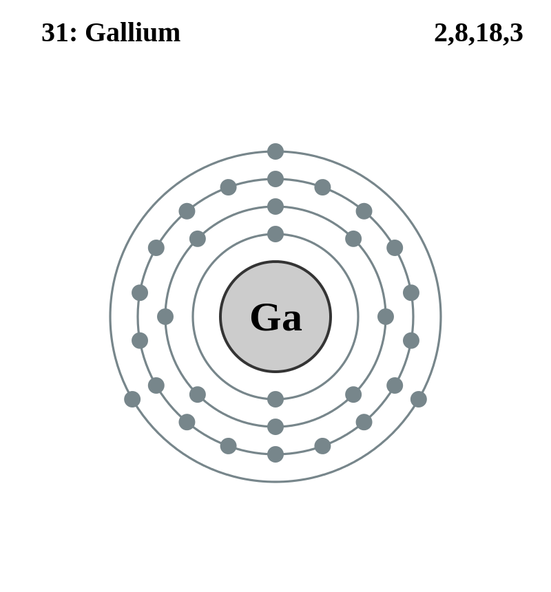

Basic Information about the element
Basic Information about the element
Name: Gallium
Symbol: Ga
Atomic Number: 31

1s2 2s2 2p6 3s2 3p6 3d10 4s2 4p1
The chemical element gallium is classed as an other metal.
It was discovered in 1875 by Paul E. Lecoq de Boisbaudran.
| Number of Protons/Electrons: | 31 |
| Number of Neutrons: | 39 |
| Atomic Mass: | 69.723 amu |
| Melting Point: | 29.78 °C (302.93 K, 85.604004 °F) |
| Boiling Point: | 2403.0 °C (2676.15 K, 4357.4 °F) |
| Classification: | Other Metals |
| Uses: | semiconductor production |